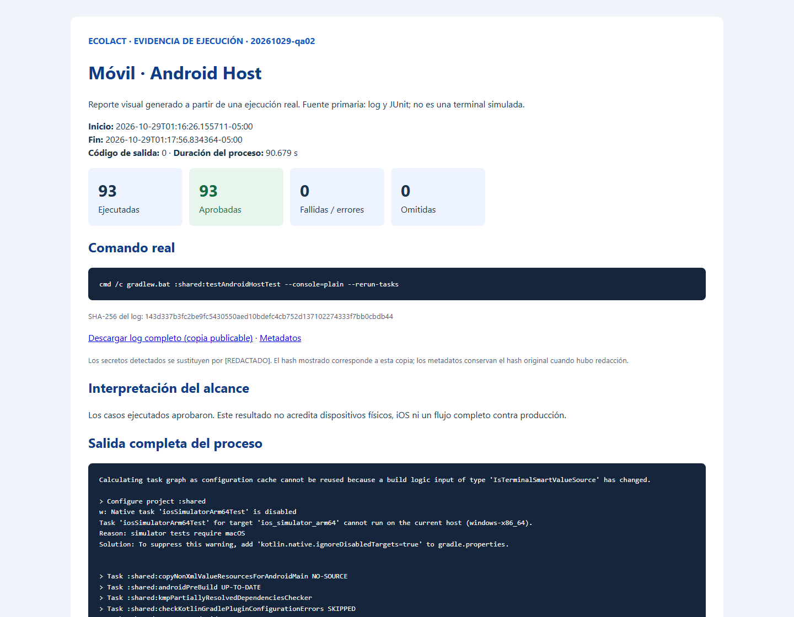

EcoLact / 6. Pruebas / Ejecución verificable
Validación de Kotlin Multiplatform y offline-first
Se inspeccionaron shared/src/commonTest, shared/src/androidHostTest, shared/src/iosTest y shared/build.gradle.kts. La tarea host ejecuta pruebas comunes y Android JVM; no requiere arrancar un emulador.
Preparación y comando real
java -version
.\gradlew.bat --version
.\gradlew.bat :shared:testAndroidHostTest --console=plain --rerun-tasks
Se usó --rerun-tasks para forzar la ejecución actual y evitar presentar un resultado UP-TO-DATE como prueba nueva. Gradle informó 33 tareas ejecutadas y salida 0. Java del lanzador es Temurin 17.0.17; el archivo gradle-daemon-jvm.properties solicita un daemon Java 21 Azul. No se deben confundir ambos entornos. Se conservaron advertencias de Kotlin sobre clases expect/actual en beta.
Casos y alcance real
| Archivo real | Objetivo y condición comprobada | Casos JUnit | Resultado | Evidencia |
|---|---|---|---|---|
shared/src/commonTest/kotlin/pe/edu/upeu/ecolactmobile/SharedCommonTest.kt |
Aserciones de lógica compartida, modelos, formato o presentación; consultar nombres de casos en JUnit. | 1 | 1 aprobadas · 0 fallidas · 0 errores · 0 omitidas | JUnit |
shared/src/androidHostTest/kotlin/pe/edu/upeu/ecolactmobile/SharedLogicAndroidHostTest.kt |
Aserciones de lógica compartida, modelos, formato o presentación; consultar nombres de casos en JUnit. | 1 | 1 aprobadas · 0 fallidas · 0 errores · 0 omitidas | JUnit |
shared/src/androidHostTest/kotlin/pe/edu/upeu/ecolactmobile/core/ui/state/LocalFirstViewModelTest.kt |
Conservar datos locales ante fallos de red y mostrar estados offline sin ocultar la copia existente. | 4 | 4 aprobadas · 0 fallidas · 0 errores · 0 omitidas | JUnit |
shared/src/commonTest/kotlin/pe/edu/upeu/ecolactmobile/core/util/FormatTest.kt |
Aserciones de lógica compartida, modelos, formato o presentación; consultar nombres de casos en JUnit. | 8 | 8 aprobadas · 0 fallidas · 0 errores · 0 omitidas | JUnit |
shared/src/androidHostTest/kotlin/pe/edu/upeu/ecolactmobile/feature/acopiador/AcopiadorOfflineTest.kt |
QR/DNI cacheado, entrega pendiente persistente, reconciliación sin duplicados, hora original, error de zona y recorrido offline. | 13 | 13 aprobadas · 0 fallidas · 0 errores · 0 omitidas | JUnit |
shared/src/commonTest/kotlin/pe/edu/upeu/ecolactmobile/feature/calidad/CalidadModelsTest.kt |
Aserciones de lógica compartida, modelos, formato o presentación; consultar nombres de casos en JUnit. | 2 | 2 aprobadas · 0 fallidas · 0 errores · 0 omitidas | JUnit |
shared/src/androidHostTest/kotlin/pe/edu/upeu/ecolactmobile/feature/calidad/CalidadMuestreoSyncTest.kt |
Selección aleatoria autorizada por servidor simulado, reconexión ordenada y conflictos; OCR queda pendiente de revisión humana. | 4 | 4 aprobadas · 0 fallidas · 0 errores · 0 omitidas | JUnit |
shared/src/commonTest/kotlin/pe/edu/upeu/ecolactmobile/feature/calidad/CalidadMuestreoTest.kt |
Aserciones de lógica compartida, modelos, formato o presentación; consultar nombres de casos en JUnit. | 10 | 10 aprobadas · 0 fallidas · 0 errores · 0 omitidas | JUnit |
shared/src/androidHostTest/kotlin/pe/edu/upeu/ecolactmobile/feature/calidad/CalidadOfflineTest.kt |
Selección, foto, análisis, conflicto y migración local. Usa HttpClient sin MockEngine, pero el repositorio se fuerza offline; las respuestas posteriores se aplican localmente. | 6 | 6 aprobadas · 0 fallidas · 0 errores · 0 omitidas | JUnit |
shared/src/commonTest/kotlin/pe/edu/upeu/ecolactmobile/feature/planta/PlantaModelsTest.kt |
Aserciones de lógica compartida, modelos, formato o presentación; consultar nombres de casos en JUnit. | 10 | 10 aprobadas · 0 fallidas · 0 errores · 0 omitidas | JUnit |
shared/src/androidHostTest/kotlin/pe/edu/upeu/ecolactmobile/feature/planta/PlantaOfflineTest.kt |
QR local, producción rechazada como conflicto, comprobante pendiente de OCR y compra encolada una sola vez. | 4 | 4 aprobadas · 0 fallidas · 0 errores · 0 omitidas | JUnit |
shared/src/commonTest/kotlin/pe/edu/upeu/ecolactmobile/feature/proveedor/ProveedorPresentacionTest.kt |
Aserciones de lógica compartida, modelos, formato o presentación; consultar nombres de casos en JUnit. | 7 | 7 aprobadas · 0 fallidas · 0 errores · 0 omitidas | JUnit |
shared/src/androidHostTest/kotlin/pe/edu/upeu/ecolactmobile/feature/trabajador/AsistenciaGateTest.kt |
Solo asistencia confirmada para hoy permite operar offline; la asistencia anterior no autoriza y el servidor simulado revalida. | 6 | 6 aprobadas · 0 fallidas · 0 errores · 0 omitidas | JUnit |
shared/src/androidHostTest/kotlin/pe/edu/upeu/ecolactmobile/feature/trabajador/MiQrTrabajadorTest.kt |
Disponibilidad local del QR propio y tratamiento de respuesta remota controlada. | 2 | 2 aprobadas · 0 fallidas · 0 errores · 0 omitidas | JUnit |
shared/src/commonTest/kotlin/pe/edu/upeu/ecolactmobile/feature/ventas/VentasModelsTest.kt |
Aserciones de lógica compartida, modelos, formato o presentación; consultar nombres de casos en JUnit. | 7 | 7 aprobadas · 0 fallidas · 0 errores · 0 omitidas | JUnit |
shared/src/androidHostTest/kotlin/pe/edu/upeu/ecolactmobile/feature/ventas/VentasSyncTest.kt |
Venta en efectivo, boleta tras sincronizar, stock reservado, usuario distinto, rechazos y reintento con misma clave y fecha. | 8 | 8 aprobadas · 0 fallidas · 0 errores · 0 omitidas | JUnit |
Procedimiento común: crear el esquema SQLDelight sobre JdbcSqliteDriver.IN_MEMORY, sembrar datos de prueba, ejecutar el repositorio o handler y verificar filas, estados o respuestas. Los tests de modelos y ViewModel pueden prescindir de la base de datos. Los detalles por función y sus tiempos están en el inventario por caso.
Offline-first e integración simulada
SQLite JDBC y las consultas SQLDelight son componentes reales ejecutados en memoria. CacheRepository, SyncQueueRepository, repositorios y handlers trabajan sobre esos datos. En los tests de sincronización, Ktor MockEngine reemplaza al servidor HTTP. El caso CalidadOfflineTest configura isOnline = { false } y cambia estados de forma local; tampoco constituye una conexión con Laravel.
Se comprueban persistencia de pendientes, claves idempotentes, conflictos visibles, reintentos y restricciones de asistencia. La reapertura que simulan los tests no acredita recuperación ante apagado físico, batería agotada, cambio real de red ni restricciones del sistema Android.
Evidencia de Android Host
Pruebas Android Host
2026-10-29T01:16:26.155711-05:00 · salida 0 · 90.679 s de proceso.
cmd /c gradlew.bat :shared:testAndroidHostTest --console=plain --rerun-tasks
93 aprobadas · 0 fallidas · 0 errores · 0 omitidas.

Reporte visual generado a partir de una ejecución real. Es una captura del reporte HTML; no es una captura directa de la terminal. La imagen resume; el log conserva toda la salida.
Log completo · Comando, fecha, duración y salida · Reporte HTML completo
También está disponible el reporte HTML original de Gradle con clases, métodos y tiempos.
Compatibilidad iOS
NO EJECUTADA: shared/src/iosTest/kotlin/pe/edu/upeu/ecolactmobile/SharedLogicIOSTest.kt contiene una prueba example. Windows no dispone de Xcode ni de un destino Apple para ejecutar iosArm64 o iosSimulatorArm64. Los casos commonTest aprobados en JVM no certifican su ejecución en iOS.
Conclusión
Los 93 casos host aprobaron y respaldan los escenarios controlados descritos. Quedan pendientes la ejecución nativa iOS, pruebas instrumentadas en dispositivos y un flujo completo con API real y MySQL aislado. No se midió cobertura de líneas ni rendimiento de producción.
Consulta la estrategia, el backend, la app móvil, la integración y el archivo de evidencias.